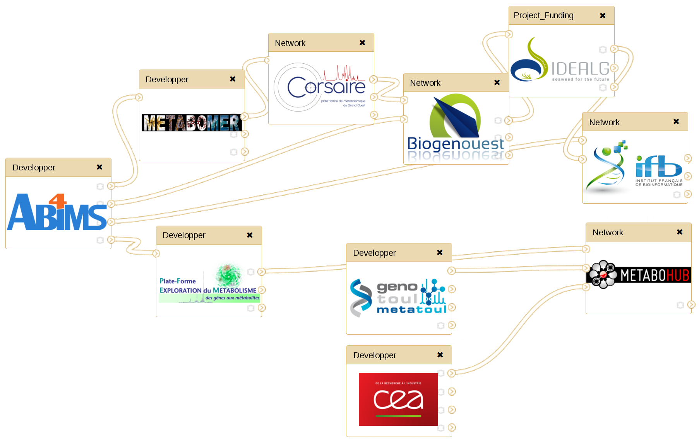

Warning
This instance is currently only for internal testing purpose. Please, do not register or launch any job!
Changelog
3.3.0 - 2019-06-06
LC-MS
- UPGRADE - HMDB MS search search by masses on HMDB online LCMS bank (from 2018-10-01 to 1.6.1)
- UPGRADE - Bank_inhouse search by accurate mass (and by Retention time) on a local bank (from 1.1.3 to 1.2.1)
- UPGRADE - HR2 formula find a chemical formula from a accurate mass (from deprecated 2014-09-18 to 1.1.1.7)
- NEW - Intensity Check Statistical measures (v 1.2.1), number of missing values and mean fold change
FLUXOMICS
- NEW - Isotope Correction for mass spectrometry labeling experiments (v 0.1.2)
Back Office
- UPGRADE - update of Galaxy from 18.05 to 19.01
- UPGRADE - More resources for a better web experience
- NEW - W4M is connected to the new computing/storage infrastructure powered by GenoToul bioinformatics platform
- NEW - W4M has a new data policy descrived here
3.2.1 - 07/03/2019
GC-MS
- UPGRADE - Golm Metabolome Database search spectrum
LC-MS
- UPGRADE - xcms.* (3.4.4): upgrade the xcms version from 3.0.0 to 3.4.4
- UPGRADE - LCMS matching Annotation
3.2.0 - 19/09/2018
LC-MS
- Preprocessing
- UPGRADE - xcms.* (3.0.0): upgrade the xcms version from 1.46.0 to 3.0.0
- WARNING - xcms.* (3.0.0): there aren't any retro compatibility between xcms1.46.0 and xcms3.0.0. You have to run the whole workflow from scratch.
- UPGRADE - xcms.* (3.0.0): a huge refactoring of a lot of underlying codes and methods have been done.
- UPGRADE - xcms.* (3.0.0): the update have changed the naming of all the tools and almost all the options. We keep the old reference in brackets
- UPGRADE - xcms.* (3.0.0): advanced parameters are now in section
- NEW - MSnbase.readMSData (2.4.0): a new dedicated tool to read the raw data. This function was previously included in xcms.findChromPeaks. This way, you will now be able to display TICs and BPCs before xcms.findChromPeaks.
- NEW - xcms.findChromPeaks (3.0.0): this tool formerly called xcmsSet doesn't take the input files directly, MSnbase.readMSData have to be run before
- NEW - xcms.plot_chromatogram (3.0.0): this new tool will plot base peak intensity chromatogram (BPI) and total ion chromatogram (TIC) from xcms experience. It will replace the one created by xcmsSet and retcor tools.
- UPGRADE - xcms.* (3.0.0): For more detail, please check the help sections under each tools and look at the picture to learn the classic workflow
- Preprocessing
Back Office
- Galaxy
- UPGRADE - update of Galaxy from 17.05 to 18.05
- NEW - the Galaxy update allow in theory "Unlimited Browser Upload Size". So FTP upload is becoming useless.
- IMPROVEMENT - the Galaxy update improve a lot the Dataset Collection performance and the render.
- IMPROVEMENT - the Galaxy update made Galaxy more lively and responsive.
- NEW - the tool dependencies are now using Conda dependencies. We hope that it will not change anything for your experience.
- Back back Office
- NEW - we have changed almost every service layers behind Galaxy but it should not be interesting for you...
- NEW - but if you insist, we are now using the triptych NGINX/uWSGI/Supervisord and it should be more reactive... W&S
- Galaxy
3.0.0 - 20/04/2017
LC-MS
- Preprocessing
- UPGRADE - xcms.* (2.1.0): upgrade the xcms version from 1.44.0 to 1.46.0
- NEW - xcms.* (2.1.0): The W4M tools will be able now to take as input a single file. It will allow to submit in parallel several files and merge them afterward using "xcms.xcmsSet Merger" before "xcms.group".
- BUGFIX - xcms.xcmsSet (2.1.0): the default value of "matchedFilter" -> "Step size to use for profile generation" which was of 0.01 have been changed to fix with the XMCS default values to 0.1
- BUGFIX - xcms.xcmsSet (2.1.0): propose scanrange for all methods
- IMPROVEMENT - xcms.group and xcms.fillPeaks (2.1.0): Add an option to export the peak list at this step without have to wait camara.annotate
- BUGFIX - xcms.group (2.1.0): the default value of "density" -> "Maximum number of groups to identify in a single m/z slice" which was of 5 have been changed to fix with the XMCS default values to 50
- BUGFIX - CAMERA.annotate (2.2.0): the diffreport ids didn't convert the rt in minute as the other export
- UPDATE - CAMERA.annotate (2.2.0): the settings (digits, convertion in minutes) of the identifiants will no longer modify the native one. Because we want to be conservative and because it can be dangerous for the data integrity during a futur merge of the table, we decide to put those customization in a new column namecustom within the variableMetadata.
- IMPROVEMENT - CAMERA.annotate (2.2.0): add some sections within the form to separate the different parts of the process
- IMPROVEMENT - CAMERA.annotate (2.2.0): add the possibility to use defined ruleset
- IMPROVEMENT - CAMERA.annotate (2.2.0): add the possibility to set the MZ digit within the identifiants
- IMPROVEMENT - CAMERA.annotate (2.2.0): is now compatible with merged individual data from xcms.xcmsSet
- Annotation
- IMPROVEMENT - ProbMetab (1.1.0): add some sections within the form to separate the different parts of the process
- IMPROVEMENT - ProbMetab (1.1.0): is now compatible with merged individual data from xcms.xcmsSet
- BUGFIX - lcmsmatching(3.3.1): Correct a bug while trying to connect to Peakforest for getting the list of chromatographic columns.
- IMPROVEMENT - lcmsmatching(3.3.1): The file database (in-house) field names are now presented in individual choice lists instead of a single text box where you had to insert a very long keys/values string.
- IMPROVEMENT - lcmsmatching(3.3.1): The tool now tries to guess the names of the file database fields, the values of the MS mode column, and the names of the input file columns.
- IMPROVEMENT - lcmsmatching(3.3.1): Allows to select the unit (minutes or seconds) of retention time values inside the input file, but also inside the file database (in-house).
- NEW - Massbank: A search by pseudo-spectra on MassBank is now available. (Version 2017-02-06)
- IMPROVEMENT - Lipidmaps: the tool support now different ionisation mode of submitted data (Version 2016-09-27)
- IMPROVEMENT - HMDB: the tool produces new outputs including compound names (Version 2016-11-28)
- Preprocessing
GC-MS
- Preprocessing
- IMPROVEMENT - metaMS:runGC (2.1): full integration of retention indices for sample and database comparison
- Annotation
- NEW - Golm Metabolome Database (2016-12-05): A tool to annotate GCMS data (MSP format) with Golm Metabolome Database.
- Preprocessing
NMR
- Preprocessing
- NEW – nmr_preprocessing (PEPS-NMR): Preprocessing of 1D NMR spectra (Galaxy Version 3.1.0)
- NEW - Alignment (2.0.3): The W4M tools will now be able to realign preprocessed spectra, using the CluPA algorithm (Vu et al. 2011)
- IMPROVEMENT - Bucketing (2.0.2): Add “zoomed” representations of bucketed spectra, depending on exclusion zone borders
- IMPROVEMENT - Normalization: corresponds to the old NMR_Annotation tool, now extended to all technologies
- Annotation
- UPDATE – Annotation: update of the mathematical algorithm to identify and quantify metabolites
- Preprocessing
2.5.1 - 09/03/2016
LC-MS and GC-MS
- UPDATE/IMPROVEMENT - 09/03/16- Normalisation / Determine_batch_correction (2016-03-03): plot layout improvement
- UPDATE/IMPROVEMENT - 09/03/16- Normalisation / Batch correction (2.0.3): plot layout improvement
- UPDATE/- 09/03/16- Normalisation / Batch correction (2.0.3): Suppression of combined table for simca
- UPDATE/IMPROVEMENT - 09/03/16- Normalisation / Batch correction (2.0.3): Addition of a new parameter "Null values"
2.5.0 - 24/02/2016
LC-MS
- BUGFIX - Preprocessing / xcms.* (2.0.5) CAMERA.* (2.1.3): better management of errors. Datasets remained green although the process failed
- UPDATE - Preprocessing / xcms.* (2.0.5) CAMERA.* (2.1.3): refactoring of internal management of inputs/outputs
- UPDATE - Preprocessing / xcms.* (2.0.5) CAMERA.* (2.1.3): refactoring to feed the new summary tool
- BUGFIX/IMPROVEMENT - Preprocessing / xcms.xcmsSet (2.0.7): New checking steps around the imported data in order to raise explicte error message before or after launch XCMS: checking of bad characters in the filenames, checking of the XML integrity and checking of duplicates which can appear in the sample names during the XCMS process because of bad characters
- BUGFIX/IMPROVEMENT - Preprocessing / xcms.xcmsSet (2.0.7): New step to check and delete bad characters in the XML: accented characters in the storage path of the mass spectrometer
- BUGFIX - Preprocessing / xcms.retcor (2.0.5): some pdf remained empty even when the process succeed
- BUGFIX - Preprocessing / CAMERA.annotate (2.1.3): the conversion into minutes of the retention time was applied to the diffreport outputs (several conditions)
- IMPROVEMENT - Preprocessing / CAMERA.annotate (2.1.3): when there are several conditions, the tool will generate individual datasets (tsv, pdf) instead of a zip file. The usual png (eic, boxplot) will from now be integrated in two pdf.
- BUGFIX - 18/01/16 - Preprocessing / xcms.xcmsSet: Some zip files were tag as "corrupt" by R. We have changed the extraction mode to deal with thoses cases.
- NEW - Preprocessing / xcms.summary (1.0.0): Create a summary of XCMS and CAMERA analysis
2.4.3 - 10/02/2016
All workflows
- UPDATE - 10/02/16 - Statistical Analysis / Multivariate (2.3.0) NEW FEATURES: Predictions now available (see the 'Samples to be tested' argument) OPLS(-DA): Predictive and Orthogonal VIP are now computed. Multiclass PLS-DA implemented. MINOR MODIFICATIONS Changes in color palette: black/grey colors for diagnostics and other colors for scores
- BUGFIX - 10/02/16 - Normalisation / Batch_correction (2.0.2): all_loess_sample: minor bug correction in the figure display (previously stopping in the case of missing 'pool' observations).
LC-MS
- BUGFIX - 18/01/16 - Preprocessing / xcms.xcmsSet: Some zip files were tag as "corrupt" by R. We have changed the extraction mode to deal with thoses cases.
2.4.0 - 04/12/2015
LC-MS
- NEW - Statitical Analysis / Biosigner: Molecular signature discovery from omics data
2.3.5 - 30/10/2015
LC-MS
- NEW - 30/10/15 - Annotation / LC/MS matching: Matching of mz/rt values onto local reference compound database.
- BUGFIX - 15/10/15 - Preprocessing / CAMERA.annotate: There was a bug with the CAMERA.annotate (generating a bad dataMatrix (intensities which don't match with the metabolites))
- BUGFIX - 09/10/15 - Preprocessing / xcms.xcmsSet: Some users reported a bug in xcms.xcmsSet. The preprocessing stops itself and doesn't import the whole dataset contained in the zip file without warning. But meanwhile, please check your samplemetadata dataset and the number of rows. Sorry about that!
- UPDATE - 30/09/15 - Statistical Analysis / Univariate (2.1.1) Internal handling of 'NA' p-values (e.g. when intensities are identical in all samples)
- UPDATE - 30/09/15 - Statistical Analysis / Multivariate (2.2.4) Correction in the Galaxy wrapper (in the previous version, the number of predictive components was sometimes set to the maximum by mistake). The regression coefficients are now provided as a new column of the variableMetadata output
- UPDATE - 22/09/15 - Statistical Analysis / Multivariate (2.2.3) The default number of permutations is set to 10 (instead of 100) as a compromise to enable both a quick computation and a first hint at model significance
2.2.1 - 18/09/2015
NMR
- NEW - Annotation / NMR_Annotation: Annotation of complex mixture NMR spectra and metabolite proportion estimation
LC-MS
- UPDATE - Statistical Analysis / Multivariate (2.2.2): A default of 100 permutations has been set in order to check for overfitting; in addition,'permutation', 'overview', and 'outlier' plots are now displayed by default. Classification is currently implemented for two-class responses only. dataMatrix is not modified by the tool, so it does not appear as an output files.Double cross-validation (advanced computational parameters): 'odd' now refers to train (instead to test) indices
2.1.0 - 02/06/2015
General
- NEW - The W4M workflows will now take as input a zip file to ease the transfer and to improve dataset exchange between tools and users. (See How_to_upload). The previous "Library directory name" is still available but we invite user to switch on the new zip system as soon as possible.
- UPDATE - Implementation of a new upload system to use FTP Galaxy features. It will allow to avoid some boring FTP and Library manipulations and to really use Galaxy dataset manager. (Data must be wrapped in a zip file) (See Tutorial -> Upload datasets)
LC-MS
- NEW - Format Conversion / msconvert_multiple_raw: no longer in beta but there are still some troubles with the Bruker format
- UPDATE - Preprocessing / xcms.*: new datatype/dataset formats (rdata.xcms.raw, rdata.xcms.group, rdata.xcms.retcor ...) will facilitate the sequence of tools and so avoid incompatibility errors.
- UPDATE - Preprocessing / CAMERA.*: new datatype/dataset formats (rdata.camera.positive, rdata.camera.negative, rdata.camera.quick ...) will facilitate the sequence of tools and so avoid incompatibility errors.
- UPDATE - Preprocessing / xcms.* CAMERA.*: parameter labels have changed to facilitate their reading.
- UPDATE - Preprocessing / CAMERA.annotate: merged with annotateDiffreport. Some parameters are dedicated to experiences with several conditions
2.0.0 - 01/06/2015
LC-MS
- UPDATE - Normalisation / Batch correction: signal drift correction based on sample trend (instead of QCs)
- NEW - Normalisation / Transformation: logarithm transformation of intensities
- NEW - Quality control / Check Format: checking formats of the dataMatrix, sampleMetadata and variableMetadata
- NEW - Quality control / Quality Metrics: provides quality metrics and visualization of the dataMatrix
- NEW - Annotation / ProbMetab: automatic probabilistic annotation
- NEW - Annotation / match_mass: search by masses on local bank
GC-MS
- NEW - Preprocessing / metaMS.runGC: GC-MS data preprocessing using metaMS package
- NEW - Annotation / Golm: to query Golm Metabolome
NMR
- NEW - Preprocessing / NMR_Bucketing: functionalities include bucketing and integration
- NEW - Normalisation / NMR_Normalization: several normalization methods (Total intensity, quantitative variable and Probabilistic Quotient Normalization).

